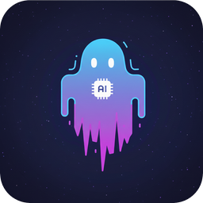

AudioGhost
Checking your PC…
Set up AudioGhost
AudioGhost runs on your own computer. The first start installs Python, PyTorch, FFmpeg and SAM-Audio, about 6 GB. Models download the first time you separate a sound.
- Graphics card
- Installs to
- Free space
Already installed AudioGhost with install.bat?
Use that Python environment instead. Nothing is downloaded.
Use another Python environment
Installing AudioGhost
This takes 5 to 15 minutes, depending on your connection. You can keep using your PC.
- Checking this PC
- Installing Python 3.11
- Installing PyTorch (about 2.5 GB)
- Installing FFmpeg 8.1
- Installing SAM-Audio
- Installing AudioGhost's packages
- Checking the installation
Details
Starting AudioGhost
Loading the app…